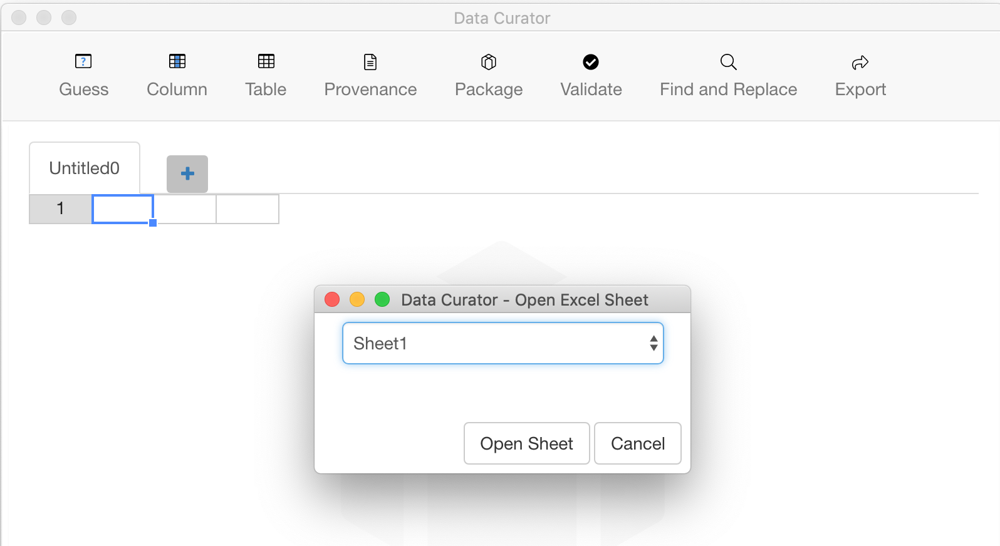

Open tabular data to add descriptions and validation rules to your data. You can open a Separated Value File or a Microsoft Excel Sheet.
Choose File > Open, then select the type of file, and choose the file location. You can open a:
Your data file may contain an inconsistent number of columns across each row. Data Curator will automatically correct this by adding extra columns as needed ensuring you have valid tabular data.
Choose File > Open Excel Sheet, then select the file location and sheet name.
